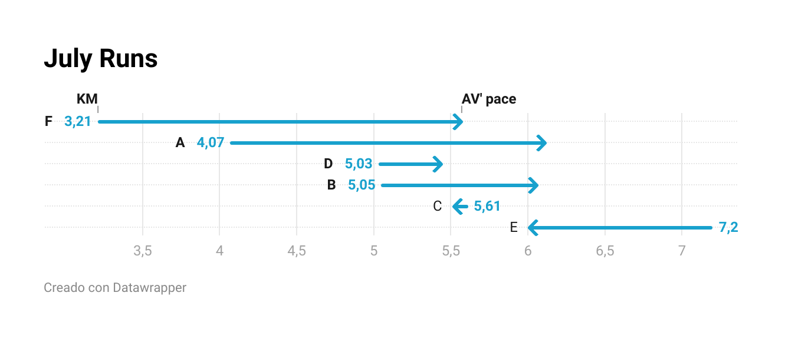

Rawgraphs
Comparación del tiempo en los primeros 4 kilómetros
Flourish
Evolución de las 6 últimas carreras en el tiempo
Datawrapper
Relación ritmo promedio con km recorridos

Comparación del tiempo en los primeros 4 kilómetros
Evolución de las 6 últimas carreras en el tiempo
Relación ritmo promedio con km recorridos